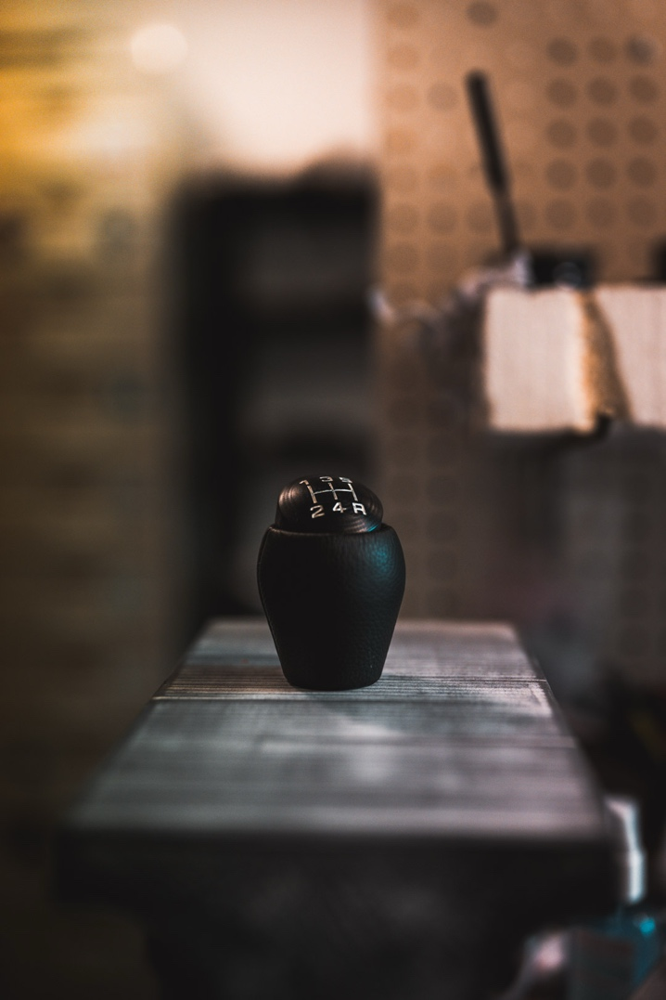
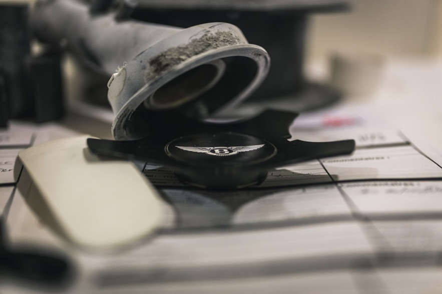

Where digital design meets workshop reality
Production work began with support removal, sanding and finishing across FDM and resin parts. Machine care was equally formative: resolving a clogged FDM nozzle and maintaining a resin FEP film made the process limits visible. Copper/nickel electroplating observation added a finishing-process perspective.
Capture, repair, reproduce
A Ferrari 400i headlight cover was digitised through multiple scans and cleaned into an exploitable surface model. In parallel, Fusion 360 was used to reverse-engineer a broken dashboard gear. These tasks showed that a successful replacement part needs more than geometric similarity: it needs material, process and assembly awareness.
The internship also involved researching and testing the Bambu Lab H2D laser module, converting initial trials into a practical setup-and-use guide and material-parameter reference. A 3DEXPERIENCE migration added the information-management side of contemporary design work.


Takeaway
The internship grounded CAD and additive manufacturing in repeatability, finishing quality and repairability. It reinforced a core principle: the digital model only becomes valuable when it can be made, handled and trusted in the physical world.
Read internship report ↗